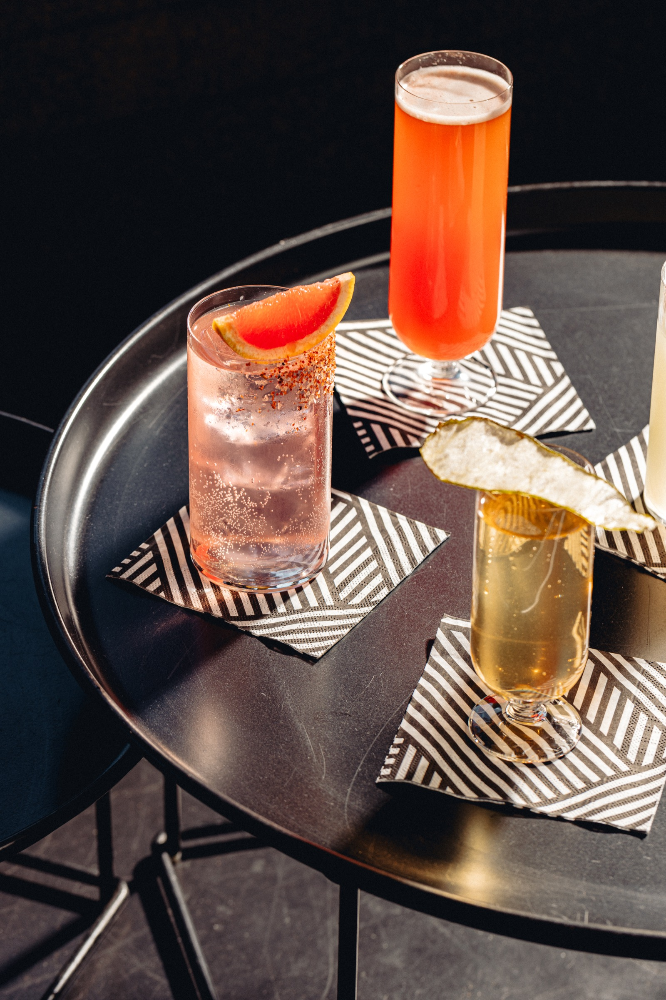

Amsterdam Cocktail Walk
Three unique bars, from the wharf to the centre.
Three unique bars, from the wharf to the centre
Whether you're new to the Cocktail Walk concept or a seasoned explorer always on the hunt for the next hidden gem, this Amsterdam route is made for you. It's the perfect mix of discovery, flavour and that laid-back city vibe. Three unique cocktail bars, each with its own atmosphere and signature drink — including Van de Werf, a bold and vibrant hotspot tucked away on the iconic NDSM wharf, with industrial charm, waterfront views and creative cocktails.
This route involves a little more walking between bars — perfect for soaking up the city — though each stop is also easily reachable by tram.
- One signature cocktail at each bar, included with your ticket.
- Digital map with the exclusive route in your inbox upon booking.
- Visit all three locations in any order, at your own pace.

Amsterdam Route 1
3 cocktails · 3 tables reserved · you just show up
Book your walk → €29,95You'll pick your date and start time in the booking calendar. Plans change? Get in touch at info@wogoamsterdam.com — we'll see what's possible.
Also walking in Rotterdam
Same formula, different city. Three bars, three cocktails, tables reserved.